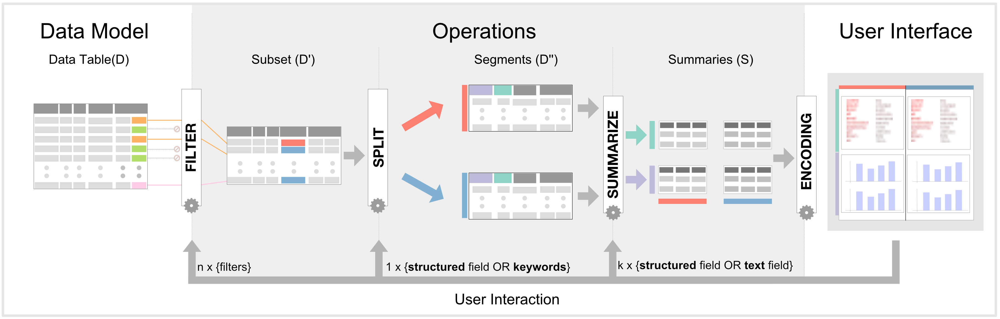

TextTile
TextTile is a data visualization tool for investigation of datasets and questions that require seamless and flexible analysis of structured data and unstructured text. TextTile is based on real-world data analysis problems gathered through our interaction with a number of domain experts and provides a general purpose solution to such problems. The system integrates a set of operations that can interchangeably be applied to the structured as well as to unstructured text part of the data to generate useful data summaries. Such summaries are then organized in visual tiles in a grid layout to allow their analysis and comparison.
Text + Structured Data
TextTile allows for the seamless exploration of text and unstructured data, all operations and tasks and visualizations in TextTile suports both Text and Structured Data types.
Powerful Operations

-
Filter
Allows the user to subset the data, focusing only in relevant documents
-
Split
Split the data in segments, allowing the user to perform comparison between diferent segments.
-
Summarize
Generate visual summaries of the segments generated by the Split operation.
Data Type Based
Visualizations
When choosing what graphical representation is appropriate for a given data summary, TextTile maximize simplicity, familiarity, intuitiveness and effectiveness, using visualizations based on charts with proven efficacy and widespread adoption, and visual representations that adapt to the specific field type selected by the end-user.
TextTile uses different representations for the 6 available field types as follows: bar charts for categorical, ordinal and quantitative fields (sorted bars for ordinal and binned for quantitative), line charts for temporal, maps for geographical, and keyword charts for keywords extracted from text.
Explore the Demo
-
Cristian Felix
cristian.felix@nyu.edu - Anshul Pandey
anshul.pandey@nyu.edu -
Enrico Bertini
enrico.bertini@nyu.edu